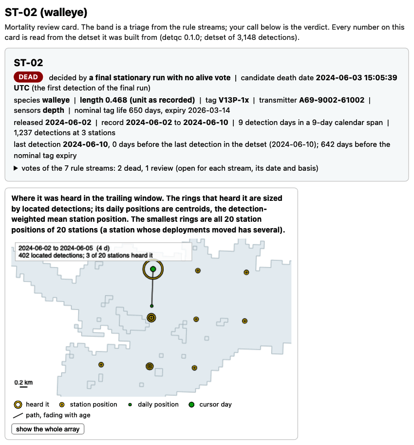
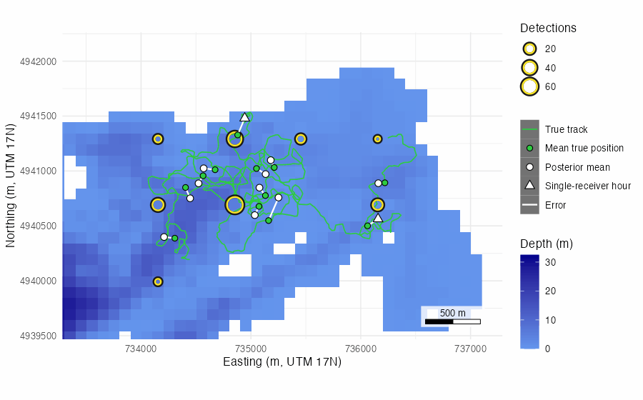
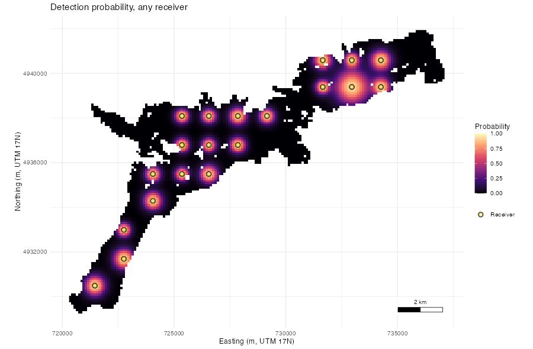
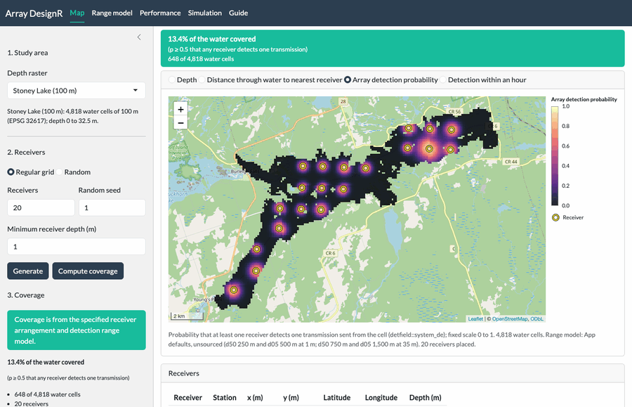

positionR is a suite of four R packages for studies that track aquatic animals with fixed acoustic receivers. The tools span end-to-end functionality, including designing telemetry arrays, simulating animal movements, loading and filtering datasets, and estimating animal positions. The packages can generate data and integrate user data from telemetry studies. The positionR package installs all four and does not attach them; each can also be installed on its own.
- detqc reads detection files from OTN, GLATOS and InnovaSea, and tagging and receiver deployment files from OTN and GLATOS, runs a range of data checks and filters, reviews mortality, and generates a processing report.
- detfield generates estimates of animal positions as a probability surface using patterns of detection, non-detection, and the associated detection range models.
- arraydesign assesses receiver array design coverage, simulates animal tracks and their detections, and scores how well a receiver array positions them.
- arraydesignR is arraydesign as a point-and-click app.
Install
# install.packages("remotes")
remotes::install_github("jakebrownscombe/positionR")One package on its own:
remotes::install_github("jakebrownscombe/detqc")
remotes::install_github("jakebrownscombe/detfield")
remotes::install_github("jakebrownscombe/arraydesign")
remotes::install_github("jakebrownscombe/arraydesignR")positionR_packages() lists the four with the versions installed:
positionR::positionR_packages()
#> positionR: 4 packages, 4 installed
#>
#> detqc 0.1.1
#> read, check and filter detections
#> https://jakebrownscombe.github.io/detqc/
#>
#> detfield 0.1.1
#> detection fields and positions
#> https://jakebrownscombe.github.io/detfield/
#>
#> arraydesign 0.1.1
#> design and test the performance of tracking systems
#> https://jakebrownscombe.github.io/arraydesign/
#>
#> arraydesignR 0.1.0
#> arraydesign as a point-and-click application
#> https://jakebrownscombe.github.io/arraydesignR/The suite

The functions of each package in the order of a study, from your files to the tools the results go to.
-
detqc: read, check and filter detections.

The top of the review card of walleye ST-02 in the simulated Stoney Lake study, which the rules put in the dead band.
-
detfield: detection fields and positions.

Hourly positions of simulated animal stoney-01 from 16:00 UTC on 1 June to 04:00 UTC on 2 June 2024. Each hour’s posterior mean is joined by its error to the animal’s mean true position in that hour, and the true track has one position a minute. The hours heard by two receivers or more fall a median 93 m from the truth; the two single-receiver hours fall 114 and 165 m from it. Each receiver’s detections are counted over these 12 hours. All 8 receivers in view heard the animal; the study has 70.
Get started: Fish positioning with detection range information.
-
arraydesign: design and test the performance of tracking systems.

Probability that one transmission from each 100 m water cell of Stoney Lake is heard by at least one of 20 receivers. The receivers sit on a grid over water at least 1 m deep. The range model is a stand-in curve whose 50% distance is 250 m at a receiver 1 m deep and 750 m at one 35 m deep. In 648 of the 4,818 water cells that probability is 0.5 or more.
Get started: Design and test an array for Stoney Lake.
-
arraydesignR: arraydesign as a point-and-click application.

The Map tab of the application on the bundled Stoney Lake raster, at its default settings of 20 receivers on a grid. The receivers and the range model are those of the arraydesign picture above, so the app counts the same 648 water cells at 0.5 or more.
Get started: The app, tab by tab.
Acoustic telemetry studies, end to end
-
Design and test the array.
place_receivers()andevaluate_array()in arraydesign: Design an array for your own water body: compare layouts. -
Read, check and filter the detections.
read_detections(),check_detset(), thefilter_functions andreview_mortality()in detqc: Base processing: read, check, and filter telemetry data. -
Fit or bring a range model and build the field.
range_test_counts(),de_model(),water_distances()andde_field()in detfield: Range models: bring your own, or start from two distances. -
Position the animals.
as_detfield_input()in detqc, thenbin_detections(),location_surface()andcredible_region()in detfield: Position fish from a cleaned detection set. -
Export.
write_detset(),to_glatos()andprocessing_report()in detqc, andsample_locations()in detfield: Export the dataset and generate a summary report.
Steps 2 to 4 on your own files, where field is the detection field of step 3:
library(detqc)
dets <- detset(read_detections("dets.csv"), read_deployments("receivers.csv"),
read_animals("animals.csv", tag_specs = read_tag_specs("tags.csv")))
dets <- filter_min_lag(check_detset(dets), max_lag_s = 4500)
counts <- do.call(detfield::bin_detections, as_detfield_input(dets))
surface <- detfield::location_surface(counts, field)Coming from positionR 1.x
Version 2.0.0 of positionR starts a new line of packages. positionR 1.x was one package that positioned animals by weighted average detection efficiency (WADE). The four packages do not yet do everything it did. None of them estimates space use, draws absences from a space-use region, weights receivers by information or analyses behavioural states. The Stoney Lake walleye detections of 1.x are not included. Keep positionR 1.7.0 for those jobs; the changelog maps every 1.x function to its place in the four packages. For habitat selection, detfield draws presence points from position surfaces and availability points from the array’s detection probability. It stacks them into the table a conditional logistic regression takes, and fits no model. Its habitat-selection article shows that position draws underestimate a preference for shallow water.
remotes::install_github("jakebrownscombe/positionR@v1.7.0")Cite
Brownscombe JW (2026). positionR: tools for acoustic telemetry studies. R package version 2.0.0, https://jakebrownscombe.github.io/positionR/.